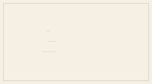
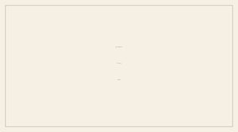
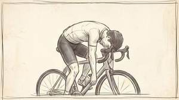
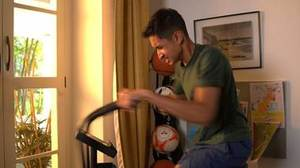
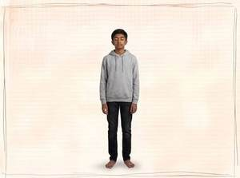
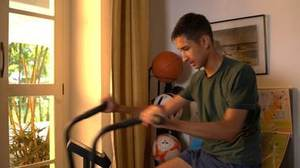
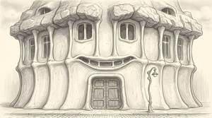
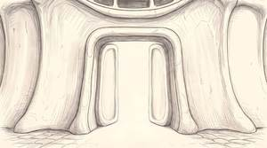
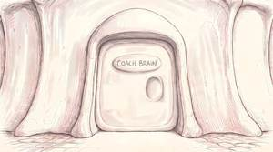

THE BRAIN BRAKE
V9 DRAFT. Scene 1 is being rebuilt from scratch and everything on this site is part of that draft. The V7 artwork is not gone: it is stored, it is still what the film is cut from, and any of it can be pulled back and modified rather than drawn again. If an older picture is better, we go back to it. Nothing here is in the film until Marko says so.
The frame

A two minute film for the Breakthrough Junior Challenge. A fourteen year old asks why a runner with nothing left can still find one more sprint. Everything here is for the animation.
Everything is 2731 x 1536, true 16:9. Key light is camera right, always.
Nothing here is in the film until Marko says so. The status under each picture says where it stands.
Video files are on GDrive, top right of every page.
Scenes
- SC0Titlenothing yet
- SC1The runnernothing yet
- SC2The bicyclenothing yet
- SC3Testing where the limit isnothing yet
- SC4Tired, and the wallnothing yet
- SC5His eyes closenothing yet
- SC6The trancenothing yet
- SC8The halls and the doorsnothing yet
- SC9The vortex, upnothing yet
- SC9RThe vortex, downnothing yet
- SC10The old theory, on the boardnothing yet
- SC11The new theory, and the keynothing yet
- SC12It is a setting, not a wallnothing yet
- SC14Credits, and the dedicationnothing yet
- SC15He lets the key go, and Manan picks it upnothing yet
- SC16The house of the bodynothing yet
- SC17The front doornothing yet
- SC18The key doornothing yet
- SC19Coach Brain’s roomnothing yet
What changed
INSPECTION FOUR. Glass centred on the calf so the leg runs unbroken through the circle. ORDINARY SKIN: no transparency, no anatomy, no light. Just a calf hanging slack, the shape soft and collapsed rather than gripped. That slackness is the entire subject of the frame, and it is the evidence against what happens next. Pair it with 1.72, the same leg opened with the light in it, and the two frames are the argument of the film in two pictures. OUT OF THE GRID 3.9.2026, Baba. The inspection is three faces now, 1.13 to 1.15, and the dead leg is not part of it.
INSPECTION FIVE. The same glass on the recovery pose, centred on his head. The eye is open and focused down the road, the jaw closed, one corner of the mouth lifted. Recognition, and something like defiance. PUT IT BESIDE 1.61 and the two read as before and after of the same man: the empty upward stare, then this. Nothing was given to him between them except the sight of the finish. HELD 3.9.2026: not placed by the running order Baba dictated for scene one, which keeps the leg inspection only. Kept and not cut. One edit puts it back.
THE CAUSE OF EVERYTHING THAT FOLLOWS, and the scene had no frame for it until now. We are over his shoulder so we look where he looks. His body is still collapsing, shoulders dropped, arms loose, stride broken, but his head has come up and turned down the road. At the vanishing point, small and a long way off, the banner. THE DISTANCE IS THE POINT: it is what makes the sprint impossible, and then it happens anyway. It also joins two frames that were sitting unconnected, the empty avenue and the banner, neither of which had anybody in it, and the collapse, which had nothing to look at. HELD 3.9.2026: not placed by the running order Baba dictated for scene one, which keeps the leg inspection only. Kept and not cut. One edit puts it back.
THE ACCEPTED TAKE. The cloud vortex he is drawn up through after his eyes close. Widescreen, 2752 x 1536, throat centred, zero coloured pixels. Third attempt: v1 had the drawing right in a square frame, v2 recomposed into a curling wave seen from the side, and v3 kept v1 as its reference so only the framing changed. Alternative take, kept. Baba approved v1.
APPROVED BY BABA 3.9.2026. MANAN IS FULL COLOUR AND THE WORLD IS GRAPHITE, and those are the only two colours in the film with the gold key. Head and lifted arm highest and pointing at the throat, feet trailing below, sweatshirt and hair streaming DOWNWARD because he is rising and the air is going past him the other way. That trail is the only thing separating rising from falling. Colour measures 0.37 per cent of the frame, all of it him. Layers CLOUD and MANAN are generated separately rather than keyed, in BB_C_9/layers.
APPROVED BY BABA 3.9.2026. The rising frame turned over. A vertical flip is physically correct rather than a shortcut: his head now points at the throat below and his clothes stream upward, which is what a head first descent looks like. Same boy, same cloud, opposite direction, and the two passages match exactly because it is the same vortex. Layers flip with it.
POINT OF VIEW. We are standing in the doorway looking in, framed by the jamb on both sides and the top, and nothing of the viewer is visible: this is his eyes, per MEMORY 28g. Coach Brain has NOT turned round. He is small, absorbed, one hand on the console, completely unbothered that somebody has arrived, and that indifference is what makes him worth being impressed by. The second open door beyond him echoes the corridor without saying anything.
note pending
note pending
THE INSPECTION PRINCIPLE, and it applies to every approved frame from here. Take the frame as it already is, change nothing in it, and lay ONE photorealistic magnifying glass over it with the handle running off the bottom edge so it reads as held from outside the shot. Only what sits BEHIND the lens grows: four or five times up, filling the circle with almost no empty glass, every pencil stroke readable. The lens distorts like real glass, the lines bowing toward the rim with a refracted fringe at the edge, and the magnified image does not line up with the drawing outside it because the glass displaces what is behind it. NEVER a second glass, never a small figure beside a big one, and never a redrawn subject. Each inspection frame sits immediately after the frame it inspects. Sits with 1-4-D-v3 on the scene and breakdown pages rather than on the front page storyboard, because it is built from that frame and a pair split across two pages is not a pair. HELD 3.9.2026: not placed by the running order Baba dictated for scene one, which keeps the leg inspection only. Kept and not cut. One edit puts it back.
The wide shot. The avenue runs away between the trees and the banner is small and far off at the vanishing point, which is the whole point of it: he sees the finish from a long way out, while there is still nothing left in him. HELD 3.9.2026: not placed by the running order Baba dictated for scene one, which keeps the leg inspection only. Kept and not cut. One edit puts it back.
THE GLASS IS ON THE CAMERA LENS, NOT ON THE PAPER. That is the rule this frame establishes and every inspection frame follows it: imagine the magnifying glass held immediately in front of the lens that is shooting the shot. So it is large and close, slightly soft at the rim from being that near, it casts NO shadow on the drawing because it is not touching it, and the world is seen through it and around it. Inside, the distant banner arrives almost at the viewer, F I N filling the circle, bowing outward toward the brass with a refracted fringe at the very edge. There is only ever ONE banner: the lens shows what is already there, made larger. Built in stages, which is what finally made it work: crop the real frame, redraw that crop sharp in the same hand, put the glass on it, then compose. HELD 3.9.2026: not placed by the running order Baba dictated for scene one, which keeps the leg inspection only. Kept and not cut. One edit puts it back.
The collapse. Caught mid fall, leaning back, one arm hanging, both legs sliding out from under him, head tipped up and mouth open. He is empty, and everybody watching knows what empty looks like. This is the frame the whole film has to earn, because what happens thirty seconds later contradicts it.
INSPECTION TWO. Glass on the camera lens, per 1.71: large and close, no shadow on the paper, the drawing seen through it and around it. His face arrives almost at the viewer, eyes rolled up and unfocused, jaw slack, every hatching stroke and the grain of the graphite readable at that size. This is the evidence Manan is examining: a man with nothing left. Hold on it, because the next thing the film shows is the same man sprinting. HELD 3.9.2026: not placed by the running order Baba dictated for scene one, which keeps the leg inspection only. Kept and not cut. One edit puts it back.
THE INSTANT BETWEEN FALLING AND RUNNING. He has caught his balance and come upright, one foot ahead of the other, arms away from his sides, and his head is up and looking down the road. The face is the whole point: the empty upward stare of the collapse has gone and been replaced by recognition, mouth closed with one corner lifted. He has seen the finish and understood he is going to reach it. He has not started running yet. HELD 3.9.2026: not placed by the running order Baba dictated for scene one, which keeps the leg inspection only. Kept and not cut. One edit puts it back.
The same pose with his near leg drawn open: the skin transparent as tracing paper and the muscular structure showing through, and in the belly of the calf a small fierce point of white light with rays pushing out through the fibres. This is the FIRST SPARK, not the blaze. IT IS DRAWN INTO THE FRAME, which matters: per modules/magnifying-glass.md the glass only ever enlarges what is already there, so the light has to exist on the paper before any lens goes near it.
INSPECTION FIVE, AND THE DOORWAY. The glass is on the camera lens as always, and it simply makes the open calf larger: the same fibres, the same tendon, the same spark, only vast, with the rays pushing out through the graphite and bowing toward the brass. Nothing new inside the lens. This is the last inspection in the film. After it the glass is gone and the release takes the whole frame: the light travels up through him muscle by muscle, and it is not new fuel, it was there the whole time and somebody has just decided to open it.
INSPECTION FIVE, AND THE LAST ONE IN THE FILM. Glass on the camera lens as always, but CENTRED ON THE CALF rather than beside it, which is what finally made the leg align: with the lens on the leg, magnifying about the lens centre and magnifying about the leg’s own axis become the same thing, so the leg runs unbroken from the shorts, through the circle, out into the ankle and the shoe. Three times up: one calf fills the lens, each fibre a separate line, the two bellies of the muscle broad and modelled, and the light burning where they meet. It stops reading as a leg with muscles in it and starts reading as the machinery itself. Nothing new is invented inside the lens, per modules/magnifying-glass.md.
THE FRAME IMMEDIATELY AFTER THE GLASS, and the first of the release. We are inside the muscle now: dense diagonal graphite fibres filling the whole frame, and a white star bursting at the centre with long rays driving out along them. THE GLASS IS GONE and it does not come back: it took us in and the sequence takes over. What follows is the light travelling up through him foot to hip, muscle by muscle, as though somebody is throwing switches one at a time. AND IT IS NOT NEW FUEL. Nobody gave him anything. It was there the whole time, closed, and somebody has just decided to open it.
The recovery pose with his near leg drawn open: the skin transparent as tracing paper, the muscular structure showing through, and a small fierce point of white light in the belly of the calf travelling along the fibres. THE LIGHT STAYS INSIDE THE OUTLINE OF THE LEG. No rays leave him, nothing spills onto the paper, and that containment is what makes it read as something happening under the skin rather than an effect drawn on top. v1 had it bursting out across the sheet and was wrong. IT IS DRAWN INTO THE FRAME, which matters: per modules/magnifying-glass.md the glass only ever enlarges what is already there, so the light has to exist on the paper before any lens goes near it. OUT OF THE GRID 3.9.2026, Baba. Went with the dead leg it belonged to.
THE FINISH LINE, CLOSE, AND IT DID NOT EXIST BEFORE. Every other finish frame is the same wide avenue with the banner far away, and the only close view of it was inside the magnifying glass, which belongs to Manan and to a later part of the scene. Made by Baba's staged method: the banner cropped out of 1-5-FINISH-v1 and redrawn sharp at full size in the same hand. FINISH is the only lettering in the frame. This is what he sees when he looks up, before he runs.
THE CHANGE. The flayed figure of 1-2c-4 closing back into a man, in the same drive pose so the two register and one can dissolve into the other. The front half is skin, vest, shorts and a shoe; the trailing leg, the back of the hip and the trailing forearm are still open muscle and the rear foot is still bare. The two states do not meet at an edge, the fibres settle into skin across the middle of him. GENERATED TWICE. The first run used 1-2c-4 as its reference, and because that figure has no face the model invented one: a young man, the wrong person entirely. Run again against 1-3-B-v5, single reference, and the marathon runner came back with his own face. One reference, and make it the one that carries the thing you need.
HE LEAVES. Only the trailing leg, the lower back, one shoulder and the trailing arm still in shot, the rest of him already past the right edge, speed strokes thinning away to the left across empty paper. The last thing with a body in it.
THE END OF THE SCENE. Bare paper and nothing standing in it. NOT GENERATED. The tone and the grain were measured off a clean corner of 1-2c-4-v1 and rebuilt, so this is the film's own paper rather than an invented white. Cream and not white on purpose: the white belongs to the trance, and scene one has not left the drawn world yet.
THE LEGS, IN THE POSITION HE ACTUALLY FALLS IN. Shot two of the opening, between the wide and the figure, so the first three shots are one instant at three sizes. NOT DRAWN FROM A DESCRIPTION. The region of 1-0-C-v2 from the shorts hem down to both shoes was cropped out and redrawn sharp at full size, single reference, which is why it matches by construction rather than by resemblance: same knee bend, same near foot rolled onto the outside edge of the shoe, same far foot planted, same thin flat heeled shoes. His hand hangs into the left of the frame because it is inside the crop. SUPERSEDES 1-0-B-v1, which had him mid stride in modern trainers and could not sit beside the man it was supposed to belong to. The ground is even cream corner to corner: the two frames before it came back with a warm vignette, and asking for the flat ground in the prompt fixed it.
MANAN WALKS IN, AND WHAT HE WALKS IN ON IS THE COLLAPSE. The boy steps into the drawn world beside the runner, magnifying glass up. The film's first crossing of its two worlds: anything real is a photograph, anything thought is a pencil drawing, and here they stand in one frame on one ground line, with the boy the taller of the two so he is the subject and the drawing is the thing being looked at. SUPERSEDES 1-5-v1, which had the runner mid sprint. magnifying-glass.md section 4: every inspection happens to ONE body in ONE pose, 1-6-COLLAPSE-v1, and a different runner in a different pose reads as a different scene however good the drawing is. BUILT FROM APPROVED MATERIAL, NOT FROM WORDS. The collapse was cut out of 1-6-COLLAPSE-v1 and composited onto the plate, and that composite was the single reference for the 2K render, so neither the boy nor the runner was invented.
HE TURNS TO US. Pushed in, and the drawing behind him is the SAME picture nearer: the head and shoulders of 1-6-COLLAPSE-v1, head tipped back, face up, mouth open. He is inspecting one image at two distances, which is what makes 1.10 and 1.11 one action rather than two shots. The drawing is pale and much fainter than he is, so the drawn world recedes exactly as the real one takes over. SUPERSEDES 1-6-v1, which carried an unrelated profile head of the old man. Same method as 1-5-v3: composite first, then render from that composite as the single reference.
HE LEAVES THE PAGE. Only the trailing leg, the lower back, one shoulder and the trailing arm still in shot, the rest of him already past the right edge, strokes thinning away to the left. THE FIRST RUN NOW ENDS THE SAME SHAPE AS THE RELEASE: he runs, he runs out, the page empties. The release does it in four, 1.17 to 1.23, with the muscle and the change in front of it. Same ending twice is the rhyme and it is deliberate. SUPERSEDES 1-3-B-v5, which was a second frame of him running hard and had nowhere to go. Rendered against 1-2c-6-v1 as the single reference so the two exits register: measured 6.6 of 255 apart. SEPARATE FILE ON PURPOSE. Baba, 3.9.2026: every asset keeps a unique name even where two frames carry the same picture, because the scene gets renamed in order when it is finished and the names alone have to rebuild the grid.
THE PAGE, EMPTY, BEFORE THE COLLAPSE COMES BACK ONTO IT. The runner has gone and what is left is bare paper, which is what Manan will walk into two shots later. NOT GENERATED and not a copy: the tone and the grain were measured off a clean corner of 1-2c-4-v1 and built in the container, with its own grain, so it is a distinct file from 1-2c-7-v1 while being the same paper. Cream and not white: the white belongs to the trance and scene one has not left the drawn world yet.
INSPECTION 1 OF 3. The glass on 1-1-v11, the face he wore before he saw anything: the eye heavy and half shut under a heavy brow, the mouth open, the lines cut deep down the cheek, the neck tendons standing. THE THREE FACES ARE THE WHOLE INSPECTION NOW. They are the same three faces the scene already showed at 1.03, 1.04 and 1.05, come back to be looked at, which is the why law: plant it before it is needed, then examine it. BUILT, NOT DESCRIBED. The brass rim and handle were cut out of 1-6-COLLAPSE-GLASS-v1 as a transparent sprite, so the glass in all three inspection frames is the approved object rather than a described one. The drawing was placed on the page small and the SAME drawing magnified inside the circle, then the lens laid over it, and that composite was the single reference for the 2K render. The lens enlarges what is already there and nothing was handed to it separately.
INSPECTION 2 OF 3. The glass on 1-1-v15, the moment it changes: the head up, the eye wide and fixed on something ahead, the brow drawn together, the mouth open. THIS ONE TOOK FOUR RUNS and the version number says so. The failures were the ones magnifying-glass.md already names: the head turned out of profile, a second man on the paper outside the rim, the glass vanishing from the frame completely, and two men side by side inside the lens. See nanobanana.md, 3.9.2026. BUILT, NOT DESCRIBED. The brass rim and handle were cut out of 1-6-COLLAPSE-GLASS-v1 as a transparent sprite, so the glass in all three inspection frames is the approved object rather than a described one. The drawing was placed on the page small and the SAME drawing magnified inside the circle, then the lens laid over it, and that composite was the single reference for the 2K render. The lens enlarges what is already there and nothing was handed to it separately.
INSPECTION 3 OF 3. The glass on 1-1-v18: the eye clear and easy, a faint smile at the corner of the mouth, the deep lines of the first face softened out, the jaw loose. The end of the face sequence, and the calf and the ignition follow it. BUILT, NOT DESCRIBED. The brass rim and handle were cut out of 1-6-COLLAPSE-GLASS-v1 as a transparent sprite, so the glass in all three inspection frames is the approved object rather than a described one. The drawing was placed on the page small and the SAME drawing magnified inside the circle, then the lens laid over it, and that composite was the single reference for the 2K render. The lens enlarges what is already there and nothing was handed to it separately.
The written plaques are gone. Each door swells outward into the shape of what is behind it, moulded in the same white clay as the door. A word excludes anybody who does not read English and does not survive translation; a raised shape is read by the body. This is the frame that teaches the audience to read the doors, so everything after it depends on it. Supersedes v4.
A bundle of fibres raised in the clay, and the door standing a hand’s width open because he has already tried it. Beyond the gap, soft darkness with nothing legible in it.
Tendon and cord running the length of the room, calm and slack rather than straining. This is the part of him that had been shouting all afternoon and it has nothing to say. The next door is visible at the far end of the same frame, because there is no cut anywhere after phase 5 and every transition is a passage through a surface.
The hall as it was, with the heart door added at the vanishing point. Supersedes v2.
The last of the wrong rooms. Chambered and patient rather than urgent. At the vanishing point, a door carrying a key in clay: the first sight of the answer, at the smallest scale it will ever have.
COACH BRAIN is gone. A key raised in the clay running the whole height of the door, white on white, part of the door rather than attached to it. By now the audience has learnt to read the bumps, so nobody has to be told. Supersedes v5.
He turns to look at us, and on a cord at his neck hangs the key. THE FIRST GOLD IN THE FILM. Gouache over pencil, the only painted thing on the sheet. It hangs small, worn rather than displayed. Supersedes v1.
The last card of the film. The film is an offering, made and then given away, the way food is offered before it is eaten. Nothing before this hints at it, which is the difference between a theme and a gift. The lettering is drawn by the same hand that drew the figure: v1 came back as a typeface because the reference order put a frame with no lettering in it first.
The vortex drawn as water, long soft strokes sweeping around and inward to an off centre throat, with the keys tiny and scattered and CARRIED by the current rather than building it. He is surrounded by thousands of the thing he is looking for and cannot see it, because he does not yet know he needs it. Replaces the Ganesha passage. Two earlier attempts built a wall out of keys and got a rosette. SUPERSEDED 2.9.2026, MEMORY 28f. The vortex carries NO KEYS. Not a wall, not chains, not a scattering. Keys in the passage discover too much: they tell the audience what he is looking for before he knows it himself, and the film has then said the word before he reaches the key door. It is a soft, gentle vortex of CLOUD, nothing sharp and nothing to read. Regenerating.
He is drawn upward, feet leaving whatever he was standing on. PHOTOGRAPHIC and monochrome inside a drawn world: he is real and the inside of the body is a drawing. His clothes and hair pull DOWNWARD because he is going up, which is the only thing that separates rising from falling. SUPERSEDED 2.9.2026, MEMORY 28f. The vortex carries NO KEYS. Not a wall, not chains, not a scattering. Keys in the passage discover too much: they tell the audience what he is looking for before he knows it himself, and the film has then said the word before he reaches the key door. It is a soft, gentle vortex of CLOUD, nothing sharp and nothing to read. Regenerating.
The current rolls him onto his side as it lifts him and he looks back down the way he came. Calm rather than frightened. The strands of keys are the water itself, sparse and dotted, and he is passing through thousands of the thing he is looking for without seeing one of them. SUPERSEDED 2.9.2026, MEMORY 28f. The vortex carries NO KEYS. Not a wall, not chains, not a scattering. Keys in the passage discover too much: they tell the audience what he is looking for before he knows it himself, and the film has then said the word before he reaches the key door. It is a soft, gentle vortex of CLOUD, nothing sharp and nothing to read. Regenerating.
Close to the throat, face open, astonishment with no fear in it. The last frame before he arrives standing in the house, so it is the one clear look the audience gets at him inside the drawn world. SUPERSEDED 2.9.2026, MEMORY 28f. The vortex carries NO KEYS. Not a wall, not chains, not a scattering. Keys in the passage discover too much: they tell the audience what he is looking for before he knows it himself, and the film has then said the word before he reaches the key door. It is a soft, gentle vortex of CLOUD, nothing sharp and nothing to read. Regenerating.
{kind=link}

NOT DRAWN YET. THE SECOND VORTEX, AND THIS ONE GOES DOWN. He arrived by rising; he leaves by falling, after Coach Brain has explained the theory and let the key go. Same throat, same strands of keys, same water, and the direction of travel reversed: his clothes and hair now pull UPWARD because he is going down, which is the only thing that tells the audience which way he is moving. Up on the way in, down on the way back, and that symmetry is the shape of the whole second half.
{kind=link}

NOT DRAWN YET. He goes under. The last thing the first half does and the hinge of the whole film: past the voice that says stop, into the trance, and from here on nothing arrives and we move instead. There is one old frame in this phase and it does not carry the beat.

NOT DRAWN YET. They weigh both theories together and agree what the limit really is. Then Manan says goodbye. Conversation, not a banner.

NOT DRAWN YET. As the vortex takes him down, Coach Brain lets the key go and it falls with him. One beat, not two: the giving and the descent are the same moment.
REJECTED FOR ITS ASPECT RATIO ONLY. Square, 2048 x 2048, where the film is 16:9. The drawing itself was right and this frame became the reference v3 was built from, so only the framing changed. Kept because a rejected take is not rubbish. APPROVED BY BABA IN CHAT 3.9.2026. It had been superseded by v3, which was generated separately while he was approving this one. v3 is kept as a proposal; this is the frame he chose.
THE UP VORTEX TURNED 180 DEGREES. A stand in, not a drawing. It is here so the shape of the film can be seen end to end while the real descent is made. Rotating a spiral does reverse the sense of the turn, which is why it holds at all, but the cloud still thins toward what is now the bottom and it will read as upside down once anybody looks twice.
note pending
THIS IS THE KEY, AND IT IS A REAL OBJECT ON THE LIVE SET. Four views: full side, tilted three quarter, head detail, bit end profile. A long round shaft; at one end a flat round disc with a three lobed clover hole and the number 5 stamped near its edge; a collar of three raised rings where head meets shaft; at the other end a flat rectangular bit with three square teeth. EVERY DRAWN KEY IN THE FILM MUST MATCH THIS. The earlier frames drew a modern flat key and are all wrong: the Coach Brain character sheet, and the four hand phases 15-1 through 15-4. The point of matching it exactly is that the drawn key and the real key are the same object, so the cross dissolve from drawing to photograph in the last shot lands on itself rather than on something similar. Photographs in reference/key/.
THIS IS COACH BRAIN. Four views: front, three quarter, side, rear. A brain for a head with no neck, two small eyes and a wide simple smile, zipped tracksuit with a stripe down each sleeve and leg, mitten hands, white trainers, about desk height. HE WEARS THE REAL KEY, the object photographed on the live set: round head with a three lobed clover hole, three ring collar, shaft, toothed bit. See reference/OBJECT_SHEET_KEY-v2.png. It hangs small, about the size of one of his eyes, and IT IS GOLD AND THE ONLY COLOUR IN THE FILM. The chain stays pencil grey right up to the ring. He wears the thing he later hands over, which is why the key frame lands: he has been carrying it the whole time.
Off the strip 1.9.2026: measured 0.00 percent colour, so the key was never made gold. v2 was generated to fix it and never reached the repository.
note pending
note pending
note pending
note pending
note pending
Superseded by v2. The key came back in pencil, and four attempts to tint it in the container failed because it touches the fingers. Tinting is banned as of 1.9.2026: if the gold is missing the prompt was wrong and the frame is regenerated.
Superseded by v3. The key came back in pencil.
note pending
note pending
note pending
note pending
CUT 2.9.2026. The banner fly through is out. The conclusion is reached in conversation between Manan and Coach Brain, not delivered on a banner the camera flies through.
note pending
note pending
note pending
Title card. Front of both versions.
Superseded by v2, which has the clouds.
Placeholder credit card.
Placeholder credit card.
Placeholder credit card.
Placeholder credit card.
Placeholder credit card.
Placeholder credit card.
note pending
note pending
note pending
note pending
note pending
Four views of the grown desk and its chair: front, three quarter, side, rear. THE SIDE VIEW IS THE USEFUL ONE, it shows the desk and the floor as a single continuous curve, which is what you need to redraw it from any angle. Dials and levers sit down in shallow hollows, never bolted onto a panel, and nothing has a rivet, bolt, flange or straight edge. The chair is a shell on a single stem. ONE DIFFERENCE FROM THE ROOM: this sheet draws the screens as part of the console. In the room they are cell-like openings in the clay wall behind it. Keep them in the wall.
note pending
note pending
note pending
Off the strip 1.9.2026. Carries the old modern key, not the real object, and the wrist has no tracksuit cuff. The release now starts on the turn.
Superseded by v2, which has the real key and the tracksuit cuff.
Superseded by the FALL sequence. Old modern key, and the drop is now a long fall from the sky.
Superseded by the FALL sequence. Old modern key.
note pending
note pending
note pending
note pending
note pending
note pending
TWO TAKES EXIST. Take one loops in the sequence on the front page; take two is beside it here.
note pending
SUPERSEDED 3.9.2026. It carried dialogue from an earlier version of the meeting. The scene now runs: he arrives, Coach Brain turns and greets him, he is asked to lift his arm and cannot, a lever moves and it comes back, and ONLY THEN the board.
SUPERSEDED 3.9.2026. It carried dialogue from an earlier version of the meeting. The scene now runs: he arrives, Coach Brain turns and greets him, he is asked to lift his arm and cannot, a lever moves and it comes back, and ONLY THEN the board.
SUPERSEDED 3.9.2026. It carried dialogue from an earlier version of the meeting. The scene now runs: he arrives, Coach Brain turns and greets him, he is asked to lift his arm and cannot, a lever moves and it comes back, and ONLY THEN the board.
Superseded by v3. Came back photographic: raking light across real canvas and shallow focus.

note pending

note pending

note pending

note pending

note pending

note pending

note pending

note pending

note pending
{kind=link}

Off the storyboard, 1.9.2026. This is a drawing sitting in a live action phase alongside real footage of the same beat, which tells the animator to draw something that was already shot. Kept in the catalogue as early reference only.
{kind=link}

CUT 2.9.2026. He does not come back to the bicycle. Once his eyes close he is in the trance and the film does not return to him cycling, rested or otherwise. This plate showed exactly that and contradicted the whole second half.

note pending
{kind=link}

Off the storyboard, 1.9.2026, same reason as V7_5_3_beat_it. A drawing in a live action phase beside real footage of the same beat. Found by measuring coloured pixels across all three live phases rather than by eye: 2.4 per cent against 62 to 92 for every photograph around it.
{kind=link}

CUT 2.9.2026. He does not come back to the bicycle. Once his eyes close he is in the trance and the film does not return to him cycling, rested or otherwise. This plate showed exactly that and contradicted the whole second half.
THE OLD THEORY. Manan's board, and only his. The arm, the fuel gauge at EMPTY, and three lines each underlined: FATIGUE IS IN THE MUSCLE, THE FUEL RUNS OUT, THE BODY STOPS. This is the 1923 answer he arrives with, having read it in a book. BLACKBOARD AND WHITE CHALK ON PURPOSE: Coach Brain answers on a whiteboard in black marker, and the reversal of surface and mark is what the audience feels before they follow the argument. The chalk draws itself as he speaks, RSA Animate style, so the board is never revealed finished. THIS IS THE FINISHED BOARD. An attempt to fill the lower right with a collapsed runner was rejected, so the empty stretch stays empty and the chalk simply stops there.
Rejected. It drew both theories on one split board, which was a design superseded hours earlier by the inversion. Two causes: the reference was the control room, whose symmetrical console and screen bank pull toward a two panel layout, and the prompt said 'nothing on the right', a negation, which adds the thing.
THE NEW THEORY. Coach Brain's answer, and THE INVERSION IS THE POINT: same layout, same three lines, same gauge as shot 10, with every value reversed. Blackboard and white chalk becomes whiteboard and black marker. Measured, mean luminance 135 against 226. THE GAUGE CARRIES THE ARGUMENT: the same instrument in both frames with the needle moved from EMPTY to FULL says the fuel was always there without a word being spoken. Cut one to the other and the audience understands before they have read the sentences. The lower right is left empty in both, because the marker is still going while he talks.
THE ENDCARD, and the film's closing rhyme. The finish banner from shot 1.2b, which was tiny between the trees and unreadable, is now the whole frame with the sentence on it: THE LIMIT IS A SETTING, NOT A WALL. The object that opened the film closes it. 4 percent ink, everything else bare paper. CUT 2.9.2026. The banner fly through is out. The conclusion is reached in conversation between Manan and Coach Brain, not delivered on a banner the camera flies through.
Off the storyboard, 31.8.2026. PHASE 3 WAS SHOT AND THE FOOTAGE IS USED. A drawn Manan does not belong on the page when a real one exists: he is a photograph everywhere else in the bicycle sequence and drawing him here contradicts the film's founding law. Kept in the catalogue as framing reference only.
Rejected. The laptop was small and low in the corner and he was looking at the floor, so it read as a boy exercising rather than a boy racing himself. The photographic still was the first reference and its layout was copied. Also far too dark, mean luminance 133 against the film's 200 to 240.
Same drawing with a hand drawn panel border, inherited from the old V7 reference. Artwork ships edge to edge and the frame is its own layer, so the border was cropped out into v2.
Rejected at 17 percent ink. It kept the whole doorway and just widened the blank centre, because the threshold was the reference and the reference decides the form. THE FIX WAS TO START FROM AN ALMOST EMPTY FRAME instead: v2 was built from an almost empty plate by removing the figure, and it worked first time. Emptying a full drawing does not work; subtracting one thing from an empty one does.
GANESHA AT FULL PRESENCE, the top of the arc. Ink 2.02 percent against 0.28 on 8.0, every line now present, and it grew the second pair of arms with the axe and noose, which is correct iconography and better than what was asked for. He is 46 percent of frame height, so the move is faint and small, then drawn and larger, then out. Kristijan scales rather than redraws. SUPERSEDED. This phase is the vortex now, not Ganesha. Ganesha is not gone from the film: he is the dedication card at the very end, 14-8-DEDICATION-v2, which is a different thing and arrives unannounced.
Both hands drawn. Correct as a drawing and wrong for this film: Manan is a photograph, so his hand cannot be drawn. Superseded by v3, which removes the receiving hand and leaves the hole.
MANAN'S SIDE OF THE ROOM, AND IT IS A PLATE. Same control room as 6.3 from a new angle: console away on the left, screens above it, the closed riveted door on the right. THE WHOLE RIGHT HALF IS OPEN FLAGSTONE WITH NOTHING ON IT, because that is where Manan is keyed in from the grey backdrop footage, walking in through that door. He is never drawn. The chair is gone because Coach Brain is not in this shot yet: Manan arrives, asks what happened, and the answer comes after. SUPERSEDED 3.9.2026. It carried dialogue from an earlier version of the meeting. The scene now runs: he arrives, Coach Brain turns and greets him, he is asked to lift his arm and cannot, a lever moves and it comes back, and ONLY THEN the board.
Rejected by Baba. The collapsed runner drawn in chalk at the lower right is out. The board as it stands in 10.0 is the board: the arm, the gauge at empty, and the three underlined lines. Nothing more is added to it.
BOARD BUILD STATE 0 of 5. Shows: bare board. These are for the animatic: cut from one to the next in time with the voice so the chalk appears as Manan says the words. SUBTRACTED from the finished board rather than generated, so every state registers to the pixel. There are faint horizontal ghosts on the bare states where the chalk was; they do not read in motion at 5 to 7 frames a second and were left rather than chased.
BOARD BUILD STATE 1 of 5. Shows: the arm. These are for the animatic: cut from one to the next in time with the voice so the chalk appears as Manan says the words. SUBTRACTED from the finished board rather than generated, so every state registers to the pixel. There are faint horizontal ghosts on the bare states where the chalk was; they do not read in motion at 5 to 7 frames a second and were left rather than chased.
BOARD BUILD STATE 2 of 5. Shows: + FATIGUE IS IN THE MUSCLE. These are for the animatic: cut from one to the next in time with the voice so the chalk appears as Manan says the words. SUBTRACTED from the finished board rather than generated, so every state registers to the pixel. There are faint horizontal ghosts on the bare states where the chalk was; they do not read in motion at 5 to 7 frames a second and were left rather than chased.
BOARD BUILD STATE 3 of 5. Shows: + THE FUEL RUNS OUT. These are for the animatic: cut from one to the next in time with the voice so the chalk appears as Manan says the words. SUBTRACTED from the finished board rather than generated, so every state registers to the pixel. There are faint horizontal ghosts on the bare states where the chalk was; they do not read in motion at 5 to 7 frames a second and were left rather than chased.
BOARD BUILD STATE 4 of 5. Shows: + the gauge at EMPTY. These are for the animatic: cut from one to the next in time with the voice so the chalk appears as Manan says the words. SUBTRACTED from the finished board rather than generated, so every state registers to the pixel. There are faint horizontal ghosts on the bare states where the chalk was; they do not read in motion at 5 to 7 frames a second and were left rather than chased.
BOARD BUILD STATE 5 of 5. Shows: + THE BODY STOPS. These are for the animatic: cut from one to the next in time with the voice so the chalk appears as Manan says the words. SUBTRACTED from the finished board rather than generated, so every state registers to the pixel. There are faint horizontal ghosts on the bare states where the chalk was; they do not read in motion at 5 to 7 frames a second and were left rather than chased.
WHITEBOARD BUILD STATE 0 of 5. Shows: bare whiteboard. Cut from one to the next in time with Coach Brain speaking, so the marker appears as he says the words. Subtracted from the finished board so every state registers to the pixel, and the whiteboard erases perfectly clean because the surface is plain.
WHITEBOARD BUILD STATE 1 of 5. Shows: the brain. Cut from one to the next in time with Coach Brain speaking, so the marker appears as he says the words. Subtracted from the finished board so every state registers to the pixel, and the whiteboard erases perfectly clean because the surface is plain.
WHITEBOARD BUILD STATE 2 of 5. Shows: + FATIGUE IS IN THE BRAIN. Cut from one to the next in time with Coach Brain speaking, so the marker appears as he says the words. Subtracted from the finished board so every state registers to the pixel, and the whiteboard erases perfectly clean because the surface is plain.
WHITEBOARD BUILD STATE 3 of 5. Shows: + IT DECIDES WHEN TO STOP. Cut from one to the next in time with Coach Brain speaking, so the marker appears as he says the words. Subtracted from the finished board so every state registers to the pixel, and the whiteboard erases perfectly clean because the surface is plain.
WHITEBOARD BUILD STATE 4 of 5. Shows: + the gauge at FULL. Cut from one to the next in time with Coach Brain speaking, so the marker appears as he says the words. Subtracted from the finished board so every state registers to the pixel, and the whiteboard erases perfectly clean because the surface is plain.
WHITEBOARD BUILD STATE 5 of 5. Shows: + THE FUEL IS STILL THERE. Cut from one to the next in time with Coach Brain speaking, so the marker appears as he says the words. Subtracted from the finished board so every state registers to the pixel, and the whiteboard erases perfectly clean because the surface is plain.
Superseded by v4. Carried a generic modern key, not the real object on the live set.
KEY FRAME 1 of 3. THE FILM OPENS HERE. He is tiny and alone in a corridor of trees, the road running away to nothing. Same avenue and viewpoint as shot 1.2b on purpose: this is the place before there is anything to see in it. The figure carries the collapse pose from V7 shot 1.2, so the wide and the close say the same thing.
KEY FRAME 3 of 3, AND HALF OF THE FILM'S BOOKEND. His legs have gone from under him and he is falling backwards, one leg folded beneath him, arms dead at his sides, head tipped back. THE POSE COMES FROM V7 SHOT 1.2 at Baba's instruction, replacing an invented crouch that read as neither running nor collapsing. Cut against shot 1.3 phase 1 at the far end of the scene: same man, same frame, one destroyed and one fresh. Frame rate here is the slowest in the film, two to three a second.
The frame as a matte. 2731 x 1536 RGBA. The paper margin and the drawn line are solid, and the window in the middle is transparent, so you drop it straight on top of any frame and it cuts its own window: the artwork shows through and the border and the margin come from this layer. The window edge follows the hand drawn wobble exactly, because it was found by walking outward from the centre of a real drawing until it hit the line, rather than by drawing a rectangle. Cut out of existing artwork, not generated, so it is the same pencil and the same paper as everything it sits on. Move it, scale it, animate it or take it off.
THIS IS THE MAN. Three studies of his head: front, three quarter, profile. Until today the only description of his face in the whole production was nine generic words, so every frame invented him again and he was a different person in each one. This sheet is the lock. The three things that carry him and must survive into every frame are the flattened bridge of the nose, the wide set deep eyes under a straight brow, and the narrow jaw under wide cheekbones. Individual views are cut out in reference/ for building frames from, because a sheet handed to a frame brings its grid with it.

The border line alone, with everything around it transparent. Wrong shape for the job: laid over a frame it drew a line and did nothing else. Kept, and the link still works. Superseded by v2.

The runner's body, four views: front, three quarter, profile, rear. Lean, about forty five, singlet and shorts, bib 27, worn racing shoes. The face sheet below is the one that holds his identity; this one holds his build and his costume.
The whole film as it stands, four panels to a page, with every line and every frame number. The live action frames now show the real footage from the shoot beside the drawn version, with the clip and the timecode on each. At the back there are two pages of clean footage frames, one per shot, for pulling into tests. This is not a proposal, it is the current version of the document. Superseded by v8. It is not deleted and the link still works, but v8 is the one to read.
The whole film as it stands, four panels to a page, fifty panels, with every line and every frame number. Live action frames show the real footage from the shoot beside the drawn version with the clip and the timecode on each. Superseded by v9, which carries the rebuilt scene 1.

Anything that moves on its own comes to you as three files, never as one picture. This is the pattern, shown with the frame because the frame is already done. The sweat droplets on shot 1.1 arrive the same way: a plate with dry skin, the droplets alone on transparency, and a composite so there is never a question about where they sit. If you need a different split than the one you are given, tick need a breakdown on the key frame and say what you want separated.
What he sees. His subjective view down the avenue, the finish banner caught small in the gap between the trunks. This is the answer to the question the previous shot planted, and it is what explains the trees: he could not have seen it before, so his exhaustion was honest. HELD 3.9.2026: not placed by the running order Baba dictated for scene one, which keeps the leg inspection only. Kept and not cut. One edit puts it back.
Superseded by the 1-3-A and 1-3-B pair. This was the sprint before the muscle activation existed. The run now begins as a dissolve out of the flayed figure, so phase 1 has to match that pose exactly and this one does not. Kept, and the link still works.

The film was shot in India and this is its thank you. In Hindu tradition Ganesha removes obstacles, and removing an obstacle is the entire subject of this film: the brake is not a wall, it is a setting, and it can be lifted. He sits on top of Coach Brain's console, the mixer of all human energies, with a few small oil lamps beside him, Tamil Nadu in feeling. He is never lit specially, never cut to and never mentioned. Anyone who knows will see him. SUPERSEDED 2.9.2026. There is no Ganesha in the story. The passage is a cloud vortex and he appears only on the dedication card at the very end, unannounced, which is what makes it a gift rather than a theme.

A century of settled science, pressed flat onto paper. It is what the film reopens. The stamp is not villainous, it is what happens when an answer is good enough for long enough that nobody asks again. Scene 2.

The old answer and the new one, side by side: an arm, and a brain. Fatigue was in the muscle for seventy four years before anyone looked higher up. The film is the gap between these two cards. Scene 7.

Manan's tool and his posture. He is not a student being taught, he is an investigator looking closer at something everybody already believes they understand. It is also the film's only handheld object that crosses between the photographed world and the drawn one. Scenes 1 and 2.

The body as a factory, and the tanks are full. A man says he is empty while his stores stand untouched behind him. Scarcity that turns out to be policy, not supply. Scene 3.

The centre of the whole film in one object. Effort is not a wall you hit, it is a dial somebody set, and it is sitting at ninety five. A wall cannot be moved. A setting can. Scenes 6 and 8.

Recruitment, seen from inside. One muscle fibre fires, then the cluster, then the leg, then the whole body. This is the muscle activation motif, and it is the only thing in the film animated at full frame rate. It appears three times, identical each time. Scenes 1, 5 and 6.

Handed from one palm to another. The brake can be released, but only by someone who has been told it exists. Knowledge as permission, and the reason the film is worth making at all. Scene 8.

The goal was always there and could not be seen. The runner is not weak, he is misinformed: he thinks he has ten kilometres left. Motivation is information. Scene 1.
The dying man. Barely moving, visibly stuttering, heavy posterisation. This is the brake fully on, and it is where scene 1 opens. If it looks broken, it is working.
Everything else in the film. Something is not turning over cleanly. This is the rate the audience learns as normal, which is what makes the other three mean anything.
He runs. Still stepped, but roughly three times the stuck rate. Nothing is explained and nothing is smooth, yet the eye feels him come loose. Same technique, higher rate, and the change alone carries the release.
The muscle activation, and nothing else, ever. Fully smooth. It happens three times in the film and it is the same sequence copy pasted each time: the runner seeing the finish line, Manan on the bicycle, and Coach Brain naming the limit.
KEY FRAME 1 of 3. He is finished, and he believes he still has ten kilometres to run, which is why the exhaustion is total. Head down, eyes on the ground, mouth open. THE CAMERA DOES NOT MOVE across these three: same head size, same position, same three quarter angle throughout. The emotion changes inside the shot without a cut, so this is the start of one continuous move, not three separate shots. Frame rate here is the slowest in the film, two to three a second, barely turning over.
KEY FRAME 2 of 3. The neck straightening, the chin off the chest, the eyes coming up off the ground to the middle distance. Still breathing hard. This is the middle of the move and the audience does not yet know why he is rising.
KEY FRAME 3 of 3. He has seen it. The whole face relaxes: brow smooth, eyes resting easy on something far ahead and out of frame, the corners of the mouth just lifted. Relief arriving, not shock. End the shot here and cut. The audience asks why he changed, and shot 1.2b answers. He is looking OUT of frame on purpose: if he looked at us the cut would not work.
KEY FRAME 1 of 4 of THE MUSCLE ACTIVATION. Deep inside a muscle, closer than any eye could get. One single fibre ignites and throws a hard star of light across the dark field; every other fibre is still unlit. THE DARKEST FRAME IN THE FILM, mean luminance 152 against about 240 everywhere else, and that darkness is what makes the light mean something. THIS SEQUENCE RUNS AT 25 FRAMES A SECOND, fully smooth, against 2 to 7 everywhere else. IT IS USED THREE TIMES IN THE FILM, the same files each time: here when the runner sees the finish line, again when Manan tries the bicycle, and again when Coach Brain names the limit. Never remake it for the other two, or the recognition dies.
KEY FRAME 2 of 4 of the muscle activation. The fire spreads. A dozen ignition points along the same fibres, the fibres beneath them gone pale, the darkness pushed out to the corners. Same diagonal and same hand as key frame 1 on purpose: it has to read as recruitment spreading through one muscle, not as a cut to somewhere new. Measured escalation from key frame 1: mean luminance 152 to 185, bright pixels 16 percent to 33 percent. The light roughly doubles at each of the four beats.
KEY FRAME 3 of 4 of the muscle activation. THE REVEAL. We pull back and what filled the frame turns out to have been one muscle in a leg. Every muscle now alight along its whole length. This is where the audience finally learns the scale they have been looking at, and where the field turns from the darkest frame in the film to the brightest. Measured across the three beats so far: mean luminance 152, 185, 235, bright pixels 16, 33, 71 percent. The leg is at rest rather than braced, which reads as charged and not yet released.
KEY FRAME 4 of 4 of the muscle activation. The whole body, flayed, every muscle alight, caught pushing off into the sprint. The end of the sequence and the peak of the light. DISSOLVE FROM HERE INTO 1-3-A: the two frames are registered on purpose so the skin fades on with nothing moving. Mean pixel difference between them is 9.7 of 255.
PHASE 1 of the run. Same pose, size and position as the last muscle frame, with skin and clothing on: the far end of a DISSOLVE, not a cut. Mean pixel difference between the two is 9.7 of 255. From here the strobe has dropped and the animation runs at 8 to 10 frames a second.
PHASE 2 of the run. Two more attempts at a fully airborne mid-stride were abandoned after four rejects, all of which came back with three legs. Kristijan can interpolate the mid-stride from these two ends, which is what an animator does anyway. If a drawn airborne beat is wanted, reference/RUNNER_STRIDE_AIRBORNE-v2.jpg is the correct pose in the right hand. SUPERSEDED 3.9.2026 by 1-3-B-v6. A second frame of him running hard, where the beat needed him to leave the frame so the page could empty for the collapse and for Manan.
Retired. Attempts to rebuild this frame from the real keyed footage did not match the original and were abandoned. The originals are shots 1.5 and 1.6.
Retired. Attempts to rebuild this frame from the real keyed footage did not match the original and were abandoned. The originals are shots 1.5 and 1.6.

MANAN WALKS IN. The runner is still going and the boy steps into the drawn world beside him, magnifying glass up. The film's first crossing of its two worlds: anything real is a photograph, anything thought is a pencil drawing, and here they stand in one frame. Both figures are on the same ground line and the runner is the smaller of the two, which is what makes the boy the subject and the runner the thing being examined. SUPERSEDED 3.9.2026 by 1-5-v3. The runner in it was mid sprint, not the collapse.

HE TURNS TO US. Pushed in. Manan holds the glass and the runner is now a pale sketch beside his head, the same man drawn small and faint. He speaks to camera over it. The contrast drops as we push in, so the drawn world recedes exactly as the real one takes over. SUPERSEDED 3.9.2026 by 1-6-v3. The head behind him was an unrelated profile of the old man rather than the frame he is inspecting. KEPT AS THE FACE OF RECORD: this is where the one boy was decided, and every appearance of him is measured against it.
THE SAME SHOT WITH THE REAL MANAN. Built from the keyed footage rather than generated: the black backdrop was keyed here by flooding from the frame edge, so his dark hair and black shoes survive intact, then graded warm and lifted toward the cream so he sits in the drawn world instead of on top of it. The generated frame beside it is still the reference for composition. Choose between them. ON THE SCENE AND BREAKDOWN PAGES ONLY, not on the front page storyboard: the generated version stands in there because it reads finished at a glance, and this one is the working material. HELD 3.9.2026. The frame it was the alternative to, 1-4-D-v3, went out of the grid, so it was falling directly after 1-6-v3 on the scene page and reading as a variant of it, which it is not. Moved in with the held frames.
THE SAME SHOT WITH THE REAL MANAN. The runner behind him is not a new drawing, it is the previous shot zoomed in and faded back, so the push-in is continuous and the contrast falls as we move closer. Real keyed footage, graded to the paper. Choose between this and the generated one beside it. ON THE SCENE AND BREAKDOWN PAGES ONLY, not on the front page storyboard: the generated version stands in there because it reads finished at a glance, and this one is the working material. OUT OF THE GRID 3.9.2026, Baba. A DIFFERENT BOY. It sat at 1.12 on the front page between two shots of the reference boy from 1-6-v1, and read as a second child. One face, one man, and this is not him. Shot 1.12 is now empty and the inspection runs 1.10 wide, 1.11 close, 1.13 the dead leg through the glass. 1-4-C-v2 stays at 1.12b as working material; note that it is close to the same composition 1-5 had and its runner is still the sprint, so it needs the same treatment if it ever comes back into the order.
Superseded by v2. Same avenue, but the figure was in the old crouched pose.
KEY FRAME 2 of 3. Close on the feet, which say runner faster than a face does and keep the face back for shot 1.1. One shoe landed flat and heavy with dust lifting, the other dragging low and barely clearing the ground. It also sets the film's method: look closely at the thing everyone thinks they already understand. NOTE: the shoes are modern trainers rather than the 1923 racing shoes on the character sheet. Cheap to correct if the period matters. SUPERSEDED 3.9.2026 by 1-0-B-v2. Wrong legs: mid stride in modern trainers, while the man in 1-0-C-v2 is sliding down in thin flat heeled shoes. A close up of a different pair of legs from the figure it cuts to.
Superseded by v2. Rejected by Baba: a half lunge, half crawl that read as neither running nor collapsing. The V7 shot 1.2 pose is the right one and v2 uses it.
The whole film as it stands, four panels to a page. SCENE 1 IS REBUILT: 15 panels instead of 5, opening on the empty avenue and the labouring feet, through the collapse, the face lifting, what he sees, the four beats of the muscle activation, the sprint, and Manan walking in. The film is 60 panels, up from 50. Everything after scene 1 is unchanged but renumbered, so any timecode taken from an earlier read through is now wrong.
Superseded by 8-0-A-v4. Brick, rivets and iron doors, built before the house exterior existed. A factory interior behind a living facade.
Superseded by 8-1-A-v2. Riveted iron piston and machined gauges, built before the house exterior existed.
Superseded by 8-2-A-v3. Riveted iron frame, built before the house existed. Its branching walls were right and were carried forward.
THE CONTROL ROOM, the end of the corridor and the deepest room in the body. A plain rectangular room, flat ceiling, square corners, worn flagstones, and the corridor door standing open on the right with the light still coming through it. THE WALLS ARE SMOOTHED GREY CLAY with shallow winding grooves pressed into them, low and quiet, with long calm stretches between: brainish, not a brain. v1 tried full relief on walls and ceiling and came back a cave. The chair is empty on purpose, this is the room before Coach Brain turns around. GANESHA IS NOT IN THIS FRAME. He is a hand's height in a room sized shot and three attempts failed to hold him, so he lives on the object sheet instead and gets composited.
Superseded 31.8.2026. Shows the riveted iron console. The desk is now grown stone, see 11-0-A-v3, and this sheet would send an animator the wrong way.
Superseded 31.8.2026. Shows the wooden panelled chair. The chair is now a smooth shell on a single stem.
Four studies of the clay wall: flat, an outside corner, the top edge where it meets the plain ceiling and the grooves stop, and the grooves drawn large. THE CORNER AND THE CEILING PANELS ARE THE POINT. Without them anyone drawing a new angle has to guess whether the grooves wrap or stop, and guessing that is exactly how the first control room came back as a cave. Smoothed grey clay, no straight edges, grooves barely raised with long calm stretches between them.
Rejected. It redrew the whole room with four panels laid over it: floor, chair, door and desk base all still there. The room was the only reference, so the room is what came back. A study sheet needs a study sheet as its first reference.
Superseded by 11-0-A-v3. Riveted iron desk and a square screen frame, built before the house exterior existed.
Superseded by v2. Iron sill, riveted frame and rectangular flagstones, built before the house exterior existed.
GANESHA. Seated, calm, palm raised, forming out of the paper rather than sitting on it. Ink coverage is 0.28 percent against 5 to 7 on a full frame, so he is barely there on purpose. THIS IS THE MIDDLE OF THE MOVE, not the end: he scales up out of nothing, through this, and is gone. If he arrives fully drawn there is nothing left to animate. Nothing else in the frame, no lamps, no lotus, no throne, so nothing competes and nothing explains him. Never lit specially, never cut to, never mentioned. SUPERSEDED. This phase is the vortex now, not Ganesha. Ganesha is not gone from the film: he is the dedication card at the very end, 14-8-DEDICATION-v2, which is a different thing and arrives unannounced.
THIS IS THE STYLE FOR BOTH THEORY SECTIONS. RSA Animate, drawn by Andrew Park at Cognitive Media. A hand draws the argument on the board while the voice explains it, in real time, and the drawing spreads sideways across the surface instead of being cut to when finished. That live scribing is exactly what we want: Manan's chalk drawing itself as he speaks, then Coach Brain answering on the whiteboard in black marker. Watch how the hand stays in frame, how pictures and words share one surface, and how the camera drifts across the board rather than cutting. These four were chosen for subject as well as style: the brain, motivation, belief changing outcome, and perception. The most viewed RSA Animates are about economics and education, which look right but say nothing to this film.
THIS IS THE STYLE FOR BOTH THEORY SECTIONS. RSA Animate, drawn by Andrew Park at Cognitive Media. A hand draws the argument on the board while the voice explains it, in real time, and the drawing spreads sideways across the surface instead of being cut to when finished. That live scribing is exactly what we want: Manan's chalk drawing itself as he speaks, then Coach Brain answering on the whiteboard in black marker. Watch how the hand stays in frame, how pictures and words share one surface, and how the camera drifts across the board rather than cutting. These four were chosen for subject as well as style: the brain, motivation, belief changing outcome, and perception. The most viewed RSA Animates are about economics and education, which look right but say nothing to this film.

The film opens on its own title, drawn in the film’s hand.
A MARATHON RUNNER runs. Not the boy: a man who has done this all his life, which is what makes the question worth asking. The world he runs through is rubbed up out of the paper, nature before anybody stands in it: road, then trees, then shoes, then legs, then the man.
THE RUNNER STOPS DEAD, mid stride, and the film holds him there. Manan walks into his own frozen frame with a magnifying glass and looks the runner over, close, curious. This is the moment the film acquires its subject: not a man running, but a boy who wants to know WHY he stops. Everything after this is him feeding that curiosity.
Curiosity becomes an experiment. He takes the bicycle out on the street and pushes at the limit himself, because a question you can ride is better than a question you can only read.
Indoors, on the trainer, with his own earlier ride playing back on the laptop in front of him. He is racing HIMSELF. There is no opponent, no clock, nobody watching: the only thing he is trying to beat is what his own body did an hour ago, which is exactly the argument the film is about to make. He pushes until he collapses.
He stops, breathes, relaxes. Out to white.
{kind=link}

He closes his eyes and goes into the light. While he is travelling through it The vortex rises, opens, and is gone, and the white closes around him exactly as it opened. Never explained, never mentioned. Then the light fades down.
{kind=link}

The light fades and he is standing in front of the door, and the door is giving off light too. He opens it and goes in, and only then do we see the building he is inside: the corridor of named doors, the rooms behind them, the threshold at the far end. Organic architecture in the manner of Gaudi throughout.
A second door, bone, with a plate reading COACH BRAIN. He opens it the same way he opened the first and goes in. What happened? I pulled the brakes on you.
Manan explains what he read on a blackboard in white chalk. Coach Brain answers on a whiteboard in black marker. Same layout, same three lines, same gauge, every value reversed.
{kind=link}

We fly at the banner reading THE LIMIT IS A SETTING and pass through it into white. Manan says the line while we are flying.
Coach Brain lets the key go, it falls through an empty frame, and we cut to Manan catching it. THE END.
Seven classical cards, in the longer version only.
The frame rate is the second language
Nothing in this film runs smooth except one thing. The animation is stepped, and how heavily it is stepped is what the shot is saying. The rate rises as the brake comes off, and the audience feels it in the body without being told. Never smooth between tiers inside a shot: the tiers are steps and the cut is where they change.
Stuck
The dying man. Barely moving, visibly stuttering, heavy posterisation. This is the brake fully on, and it is where scene 1 opens. If it looks broken, it is working.
The default
Everything else in the film. Something is not turning over cleanly. This is the rate the audience learns as normal, which is what makes the other three mean anything.
Released
He runs. Still stepped, but roughly three times the stuck rate. Nothing is explained and nothing is smooth, yet the eye feels him come loose. Same technique, higher rate, and the change alone carries the release.
Alive
The muscle activation, and nothing else, ever. Fully smooth. It happens three times in the film and it is the same sequence copy pasted each time: the runner seeing the finish line, Manan on the bicycle, and Coach Brain naming the limit.
Glossary of symbols
The film says most of what it means through objects. These are the ones that carry weight, what each one stands for, and where it appears. A symbol that comes back is doing work the second time too.
The stamp — CASE CLOSED
A century of settled science, pressed flat onto paper. It is what the film reopens. The stamp is not villainous, it is what happens when an answer is good enough for long enough that nobody asks again. Scene 2.
The two cards — 1923 and 1997
The old answer and the new one, side by side: an arm, and a brain. Fatigue was in the muscle for seventy four years before anyone looked higher up. The film is the gap between these two cards. Scene 7.
The magnifying glass
Manan's tool and his posture. He is not a student being taught, he is an investigator looking closer at something everybody already believes they understand. It is also the film's only handheld object that crosses between the photographed world and the drawn one. Scenes 1 and 2.
The tanks
The body as a factory, and the tanks are full. A man says he is empty while his stores stand untouched behind him. Scarcity that turns out to be policy, not supply. Scene 3.
The lever — 95 of 100
The centre of the whole film in one object. Effort is not a wall you hit, it is a dial somebody set, and it is sitting at ninety five. A wall cannot be moved. A setting can. Scenes 6 and 8.
The single fibre lighting
Recruitment, seen from inside. One muscle fibre fires, then the cluster, then the leg, then the whole body. This is the muscle activation motif, and it is the only thing in the film animated at full frame rate. It appears three times, identical each time. Scenes 1, 5 and 6.
The key
Handed from one palm to another. The brake can be released, but only by someone who has been told it exists. Knowledge as permission, and the reason the film is worth making at all. Scene 8.
The finish line behind the trees
The goal was always there and could not be seen. The runner is not weak, he is misinformed: he thinks he has ten kilometres left. Motivation is information. Scene 1.
email composer · the frame
THE BRAIN BRAKE
The Central Governor Theory · Breakthrough Junior Challenge 2026